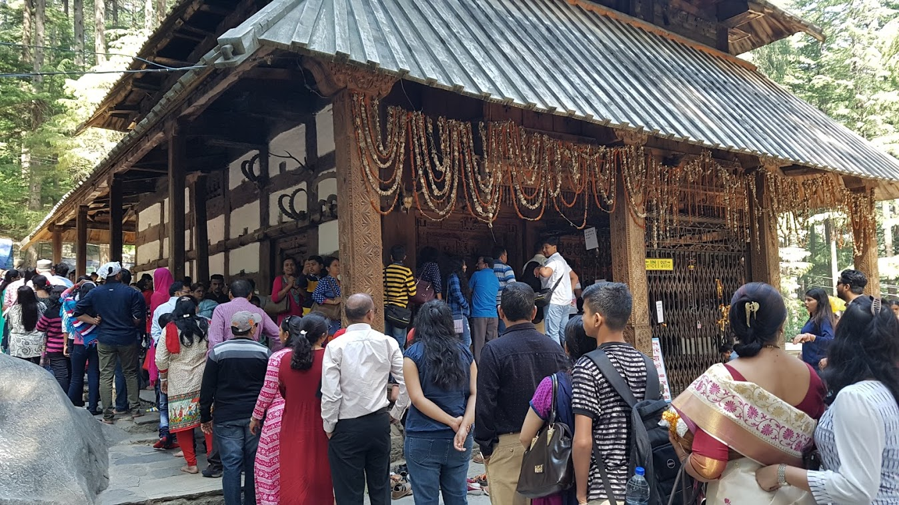
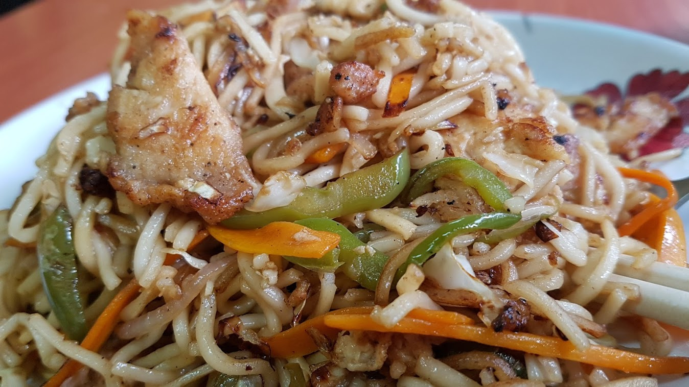

버스 출발 시간이 코 앞인데 정류장을 못찾겠다!
2017년 05월 13일
여행 D+40, 인도 D+11, 마날리 D+7
나도 여행중인데 나랑 같은 장소에 갔었던 사람들 사진을 보면 부럽다. 이상한 일이다. 나도 분명 갔던 장소인데 나보다 더 멋지게 나온 사진을 가진 그들이 부러운것이다. 나도 저런 사진을 찍었어야하는데 하는 후회도 생긴다. 흠 뭔가 잘못된것 같다.
여행은 안전지대(Confort Zone)를 벗어나는 것과의 싸움이다. 여행만큼 그 싸움을 마주하게 하는것도 없다는 생각이 들었다. 이미 익숙해진 여행지를 언젠간 떠나야 하기 때문이다. 특히 장기 여행자로서 다음 목적지가 있는 경우는 과괌하게 결단해서 떠나야한다. 모든 스케줄이 정해져있지 않은 한 말이다. 익숙해지면 가만히 있게되기 쉽다. 그럴땐 과감히 떠나자. 나는 이곳 마날리가 마냥 좋기만 하다. 지금까지 여행지중 가장 좋았던것 같다. 하지만 그럴때일 수록 과감히 떠나야함을 느낀다.
오늘은 어제 조쉬가 Naggar라는 마을에 같이 가지 않겠냐고 해서 동행하기로 했다. 오늘 마날리의 마지막 날이지만 할일이 없었던 나는 분명 방안에만 틀어박혀 있었을 것이다. 그럴바엔 이곳저곳 돌아다니는게 낫다. 우리는 숲을 가로질러 뉴마날리에 가기로 했다. 안가본길 색다른길을 다니는것은 언제나 즐겁다. 이곳 마날리의 삼나무 숲은 평생잊지 못할것 같다. 가는 길에 사원이 하나있었고 그 주변에 놀이동산같이 꾸며져 있었다. 수많은 사람들이 사원앞에 줄을 서 있었다. 마날리에서 이런 사원은 처음 봤기 때문에 줄에 서있는 인도인아저씨한테 물어봤다. 그냥 유명한 사원중 하나라서 그렇다고 한다.
 한 사원에 종교 의식을 치루러 엄청나게 많은 사람들이 줄 서 있었다.
지금 읽고있는 책 인포메이션 챕터는 밈(meme)에 관련된 챕터이다. 밈이란 마치 유전자 처럼 독자적으로 진화하고 복제되는 관념 같은것인데, 종교도 그중 하나이다. 도킨스는 심지어 인간은 밈과 진(gene)이 전파되기 위한 탈것(vehicle)이라고 까지 주장한다. 인도에 와서 수많은 의식과 종교적 건축물을 구경하니 궁금증이 점점 깊어진다. 인간은 왜 의식을 치루는가? 종교는 구체적으로 어떻게 만들어졌나? 잘 정리된 관련 서적이 있다면 읽어보고 싶다.
조쉬는 여행 가이드 출신이다. 2년동안 일했다고 한다. 그런데도 불구하고 장비도 별로 없고 가이드북도 별로 보지 않고 지도도 보지 않는다. 아이폰을 가지고 있음에도 불구하고 지도를 보는 모습을 본적이 없다. 반면에 나는 항상 장비를 갖추고 있고 지도와 GPS를 켜서 현재 위치를 끊임없이 확인한다. 조쉬는 그런 내모습이 못마땅했는지 지도좀 그만 보라고 한다. 맨날 지도만 보고 정해진 길을 따라다니니 많은 것들을 놓치는 거란다. 한대 얻어맞은것같은 느낌이었다. 맞는 말이었다.
로컬버스 타는게 점점 쉬워진다. 오늘도 버스 정류장에서 쉽게 로컬버스를 탔다. 버스 앞에서 Narggar ?물어보니 저 버스를 타라한다. 그렇게 미션은 쉽게 달성했다. 버스타는일이 심지어 한국보다 더 쉽게 느껴진다. 조쉬도 뉴질랜드 보다 더 쉬운것 같다고 한다. 약 한시간정도 걸려서 Narggar에 도착했는데 높은 언덕을 올라가서 궁전도 구경하고, 아트 갤러리도 구경하고 무슨 러시어인 추모 박물관도 구경했다. 사실 내 관심사가 아니다보니까 별로 재미는 없었다. 그냥 흥미롭기는 했지만 그게 다였다.
반나절을 Naggar에서 보낸 뒤 다시 로컬버스를 타고 마날리에 도착했다. 나는 이제 짐 정리도 하고 숙소비 정산도 하고 저녁식사도 하고 8시에 버스를 타러 가야한다. 조쉬와는 그렇게 헤어졌다. 처음에는 서로 즐겁게 대화했던 우리는 갈수록 서로 대화가 사라졌다. 내 언어의 한계이기도 할것이고 그친구가 워낙 말도 없고 그리고 대화 소재가 떨어졌기 때문일 것이다. 처음에는 서로에대한 호기심이 있으니 물어볼게 많다. 그런데 그것도 몇일이 끝인것 같다. 이런것을 잘 염두해두고 여행할때 주의해야할 것 같다. 상대방에 대한 호기심을 잃지 말고 대화 소재를 계속 늘리기.
오늘 마지막 저녁식사는 마날리에서 유명한 송어를 먹기로 했는데 한국식당에서 회를 먹기로 했다. 근데 막상 식당에 들어가보니 3인분씩만 팔고 2천 루피가 넘어서 포기했다. 그래서 마지막으로 며칠전 정말 맛있게 먹었던 티벳 음식점에 가서 초우면을 먹었다. 그리고 뉴마날리에가서 찹스틱 식당에서 모모를 먹기로 했다.

마지막 저녁식사 raj 레스토랑 치킨 초우면, 마날리 최고 맛집중 하나로 꼽는다.
이곳 마날리에서 하루하루 매일 다른 식당을 갔다. 이것도 일종의 컴포트존 깨기다. 식당도 익숙해진 곳만 가게되기 쉬운데 그것을 벗어나기 위해 노력했다. 그래서 정말 다양한 음식들 맛있는 음식들을 경험했고 먹을때 마다 너무 행복했다. 매일 그렇게 다른 가게들을 다녔고 외국인이라 그런지 많은 사람들이 나를 기억해줬다. 여기온지 6일 되었지만 나는 동네 주민인것 마냥 가게 주인들과 간단한 손인사나 또는 몇마디를 주고받기도 하며 거리를 지나간다. 이렇게 동네 사람들과 친해지는것이 여행의 또하나의 기쁨인것 같다. 이곳에서 만난 친절한 사람들 가게 주인들을 잊지 못할 것 같다.
나는 모든 짐을 준비하고 릭샤를 탔다. 내려가는 길에 릭샤 아저씨랑 또 너무 즐겁게 대화했다. 여긴 왜이렇게 좋은 사람들밖에 없는걸까?! 릭샤꾼의 삶에 대해 몇가지 물어봤는데 하루 800루피 정도를 번다고 한다. 그리고 집은 한달씩 렌트를 하는데 2500루피가 들어간다고 한다. 생활비 릭샤 렌트비까지 치면 생활하기에 빠듯한 금액이다. 그렇기 때문에 그들이 그렇게 생존 지향적이었던 것이다. 릭샤꾼들을 조금더 이해하게 되었다. 나는 이 아저씨와의 대화도 너무 만족스러웠고 또 다음 목적지까지의 안내도 마음에 들어서 팁을 주기로 마음먹었다. 인도에 처음와서 릭샤꾼에게 된통 당하기만 했는데 또 가장 만족스러운 경험을 했던것도 릭샤꾼이었다. 정말 작은 팁이었지만 아저씨는 너무 기뻐했다. 나도 그 모습을 보니 뿌듯하고 기분이 좋았다. 이런것이 사람들과 부딛히며 살아가면서 느낄 수 있는 행복인가 보다!
8시가 다되어가는데 버스정류장을 찾지못해 버스를 놓칠뻔했다.
찹스틱 레스토랑에서 마지막 식사를 했다. 너무 오래있었는지 거의 버스시간이 20분밖에 남지 않았다. 나는 버스정류장이 가까이 있을것으로 생각했는데 아무리 내려가도 정류장이 보이질 않았다!! 멘붕이 왔다. 이렇게 버스를 놓치는 건가?! 다시 뒤로 돌아갔다. 가는길에 길에서 만나는 사람들 모두에게 물어봤다. privat bus station 이 어디냐고? 근데 내가 아까 가던 방향에 있다고 한다. 근데 나는 아무리 가도 찾을 수 없었다.
그래도 모든 사람들이 그 방향을 가리키길래 믿고 계속 걸어 가보기로 했다. 정말 오랜 시간이 걸려 가니 꽤 커다란 정류장이 나타났다. 지도에는 분명 5분정도 걸리는 거리에 있었는데, 도저히 5분거리가 아니었다. 나는 당황해서 땀범벅이 되었다. 버스 출발 시간은 1분정도가 남았다. 만약 버스가 8시 정시에 출발한다면 나는 버스를 놓친것이다. 결국 늑장 부리다가 버스를 놓치게 된것이다. 컴컴하고 수 많은 버스로 채워진 거대한 버스정류장에서 내가 탈 찾는것도 쉬운일이 아니었다. 우여곡절 끝에 사람들에게 물어물어 도착했는데 다행이 버스는 출발하지 않았다!! 다행이 버스는 8시반에 출발했다. 버스를 타는데 성공했다. 버스정류장을 찾는 한시간은 정말 당황스럽고 힘든 시간이었다. 정말 너무 힘들었다. 나란애, 준비성이 없어도 너무 없다.. 오늘 미션은 모두 끝이 났다. 이제 버스에서 잠만 자면서 가면된다. 오늘 하루도 정말 길었다.
다람샬라로 향하는 버스정류장 정확한 위치. (수정필요)